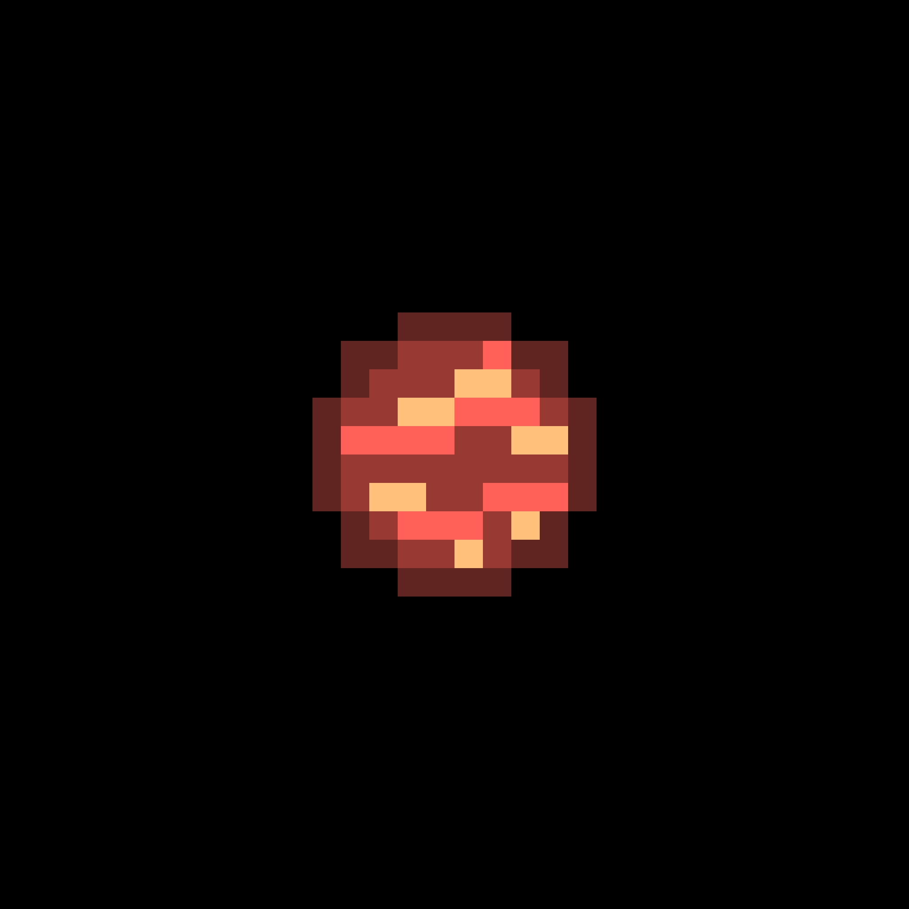

TOI-4336 A c är senaste exoplaneten upptäckt (från och med den 3 mars 2026). Planeten har en massa som är ungefär 50% större än jorden och dess radie är cirka 25% större än jorden. Den ligger 0,05092 AU från sin stjärna och det tar 7 dagar 14 timmar att kretsa runt sin stjärna.